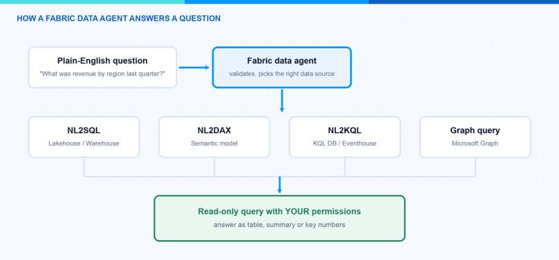
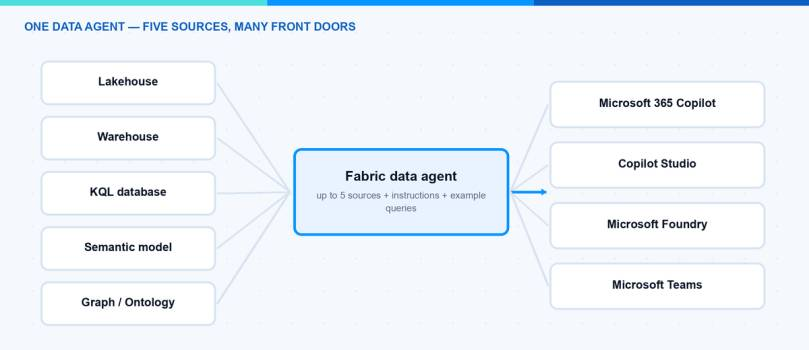

Every company has the same gap: the data sits in lakehouses and semantic models, and the people with questions cannot write SQL or DAX. In this blog post I explain what a Fabric data agent is and how you build one. A Fabric data agent is the conversational analytics piece of Microsoft Fabric — your colleagues ask questions in plain English, and the agent generates and runs the queries against your governed data in OneLake.
What is a Fabric data agent?
A Fabric data agent is a generally available Fabric item that turns your data into a conversational Q&A system. You configure it once — data sources, relevant tables, instructions, example queries — and then publish and share it, similar to how you would share a Power BI report. Under the hood it uses a Microsoft-managed Azure OpenAI Assistant to translate a question into a real query, run it read-only, and return a human-readable answer. You do not need your own Azure OpenAI key; Fabric handles the model and the authentication for you.
The important part for me: it is not a chatbot next to your data, it works on your governed data. The agent runs with the asking user’s Microsoft Entra identity and permissions, respects Microsoft Purview policies like DLP and sensitivity labels, and strictly enforces read-only access. It can generate SELECT-style queries, but never anything that creates, updates or deletes data.
What do I need before I start?
The prerequisites are short but important:
- A paid Fabric capacity of F2 or higher, or a Power BI Premium per capacity (P1 or higher) with Microsoft Fabric enabled.
- The tenant settings from the Fabric data agent tenant settings page enabled by your Fabric admin — including cross-geo processing and cross-geo storing for AI, if your capacity region requires it.
- At least one data source with data, where you have read access: a lakehouse, a warehouse, a Power BI semantic model, a KQL database, a mirrored database, or an ontology.
Note: For semantic models, plain Read permission on the model is enough — the user does not need access to the workspace where the model lives, and Build permission is not required. Row-level and column-level security still apply.
How does the Fabric data agent work?
The flow behind every question has five steps. The agent parses and validates the question, picks the most relevant data source, and then invokes a query tool for exactly that source type:
- NL2SQL for lakehouses and warehouses
- NL2DAX for Power BI semantic models
- NL2KQL for KQL databases (including Eventhouse, for live and historical time-series data — it can even use your KQL user-defined functions)
- Microsoft Graph queries for organizational data
The generated query is validated, executed with the user’s credentials, and the result comes back as a readable answer — a table, a summary, or key numbers. The chat also shows the intermediate steps and the generated query, so you can verify how the answer was built. Nobody has to write SQL, DAX or KQL themselves.

Note: Because the agent always uses the asking user’s permissions, two colleagues can ask the same question and get different answers. That is not a bug — that is row-level security doing its job.
How can I create one?
Creating a Fabric data agent feels like building a report: design, refine, publish. This is the exact click path in the Fabric portal:
- Open your Fabric workspace and click + New item. In the All items tab, search for Fabric data agent, select it, and enter a name.
- Add data sources. The OneLake catalog opens automatically. Select a source, click Add, and repeat — each source is added individually. One agent supports up to five data sources in any combination: lakehouses, warehouses, Power BI semantic models, KQL databases, ontologies, and Microsoft Graph.
- Select the relevant tables. After adding a source, the Explorer pane on the left shows its tables — use the checkboxes to make only the relevant ones available to the AI. Less is more here: the agent gets more accurate when it only sees the tables that matter. For lakehouses, only tables work — raw CSV or JSON files must be ingested into tables first.
- Click Data agent instructions and write your routing logic in plain language (up to 15,000 characters): “Questions about financial metrics go to the Finance semantic model, raw data exploration goes to the lakehouse, log analysis goes to the KQL database.” You can also define your organization’s terminology here.
- Click Example queries and add sample question-query pairs — up to 100 per data source. They work like few-shot examples and teach the agent how your typical questions map to correct queries. (This is not supported for semantic model and ontology sources yet, and only syntactically valid queries that match the schema are used.)
- Test in the built-in chat pane, then click Publish and add a good description. The description is not decoration — other agents and orchestrators use it to decide when to call your data agent.
Hint: After publishing there are two versions: the published one your colleagues use, and your draft, which you keep refining. And treat the configuration like code — Fabric data agents support Git integration and deployment pipelines, so you can version everything and promote it from a test workspace to production.
Where can my colleagues use it?
This is where it gets interesting. The published Fabric data agent is not locked into the Fabric portal — it is a building block for the whole agent ecosystem:
- Microsoft 365 Copilot: insights from your OneLake data directly in the apps where people work. Purview policies still apply on this path.
- Copilot Studio and Microsoft Foundry: use the data agent as a sub-agent in a bigger multi-agent solution. In Microsoft Foundry (formerly Azure AI Foundry) there is a dedicated Fabric data agent tool (currently in preview) — you create a connection with the workspace ID and the artifact ID of your published agent, and your Foundry agent decides at runtime when to hand a question over. The query still runs with the end user’s identity, so governance travels with it. This pairs nicely with a Foundry agent you built yourself.
- Microsoft Teams: expose it as a chat experience for a team.
In the bigger picture this plugs into the Fabric IQ layer of Microsoft’s agentic stack from Build 2026: Fabric IQ (still in preview, unlike the GA data agents) models your business data as ontologies and semantic models, and data agents are how other agents get grounded, governed answers from it.

What are the limits?
A few things I would want to know before rolling this out:
| Limitation | What it means in practice |
|---|---|
| Read-only | No writes, no triggering jobs or notebooks — questions only |
| 25 rows / 25 columns per answer | Built for insights, not for exporting datasets |
| English only | Questions, instructions and examples should be English |
| No unstructured data | PDF, DOCX and TXT files are out of scope |
| Same capacity region | Data source capacity and agent capacity must be in the same region |
| Fixed model | You cannot change the LLM behind the agent |
| Chat history not guaranteed | Service updates can reset past conversations |
The 25-row cap surprises many users: if someone asks “show me all orders from this year”, they get a maximum of 25 rows, and follow-up questions build on that limited context — in that case, starting a new chat is the honest fix. For real exports, Power BI or a notebook stays the right tool. Also note that Purview DLP and access restriction policies can truncate or block answers on sensitive sources — that is by design.
All details are in the official Fabric data agent documentation.
My thoughts
I like Fabric data agents because they solve the demo problem of most “chat with your data” tools: governance. Permissions, Purview policies, read-only enforcement and ALM are built in, so I can hand the agent to a department without losing sleep. My recommendation: start with one semantic model, ten good example queries on a lakehouse or warehouse source, and clear instructions — then grow to more sources once the answers are reliably right.
I hope this is a little help.
Stay healthy, Cheers Jannik